Simple Examples
These examples show what Unitful recipes are all about.
First we need to tell Julia we are using Unitful and Plots
using Unitful, PlotsSimplest plot
This is the most basic example
y = randn(10) * u"kg"
plot(y)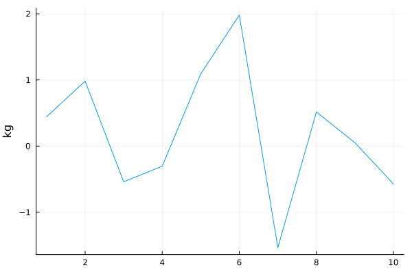
Add some more plots, and it will be aware of the units you used previously (note y2 is about 10 times smaller than y1)
y2 = 100randn(10) * u"g"
plot!(y2)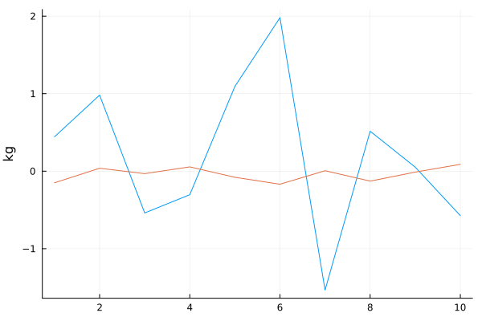
Unitful recipes will not allow you to plot with different unit-dimensions, so
plot!(rand(10)*u"m")won't work here.
But you can add inset subplots with different axes that have different dimensions
plot!(rand(10) * u"m", inset = bbox(0.5, 0.5, 0.3, 0.3), subplot = 2)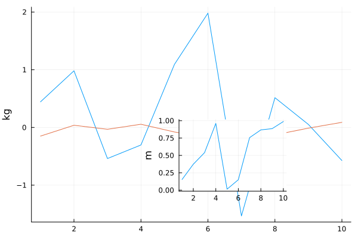
Axis label
If you specify an axis label, the unit will be appended to it.
plot(y, ylabel = "mass")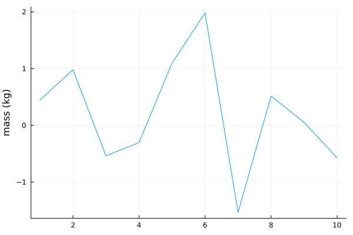
If you want it untouched, set the yunitformat to :nounit.
plot(y, ylabel = "mass in kilograms", yunitformat = :nounit)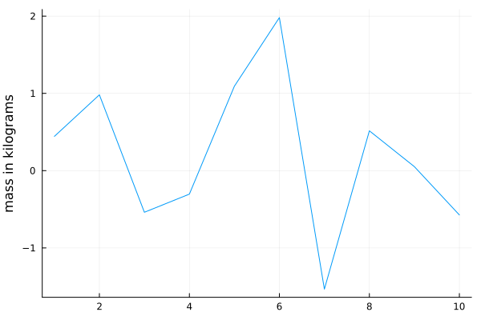
Just like with the label keyword for legends, no axis label is added if you specify the axis label to be an empty string.
plot(y, ylabel = "")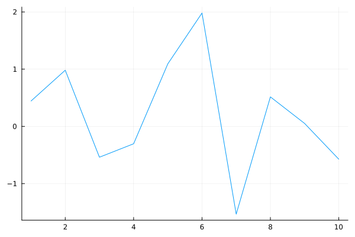
Unit formatting
If you prefer some other formatting over the round parentheses, you can supply a keyword unitformat, which can be a number of different things:
unitformat can be a boolean or nothing:
plot([plot(y, ylab = "mass", title = repr(s), unitformat = s) for s in (nothing, true, false)]...)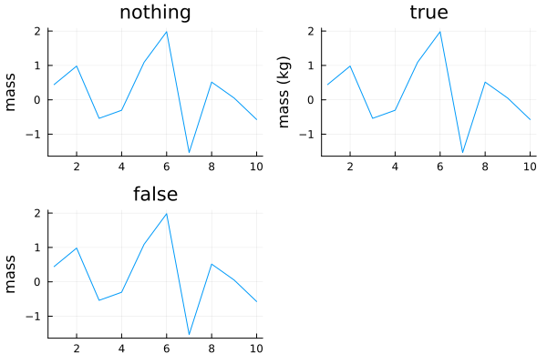
unitformat can be one of a number of predefined symbols, defined in
URsymbols = PlotsBase.Axes.UNIT_FORMATS |> keysKeySet for a Dict{Symbol, Any} with 13 entries. Keys:
:space
:slash
:square
:slashsquare
:verbose
:slashround
:angle
:slashcurly
:nounit
:slashangle
:curly
:none
:roundwhich correspond to these unit formats:
plot([plot(y, ylab = "mass", title = repr(s), unitformat = s) for s in URsymbols]..., size = (800, 600))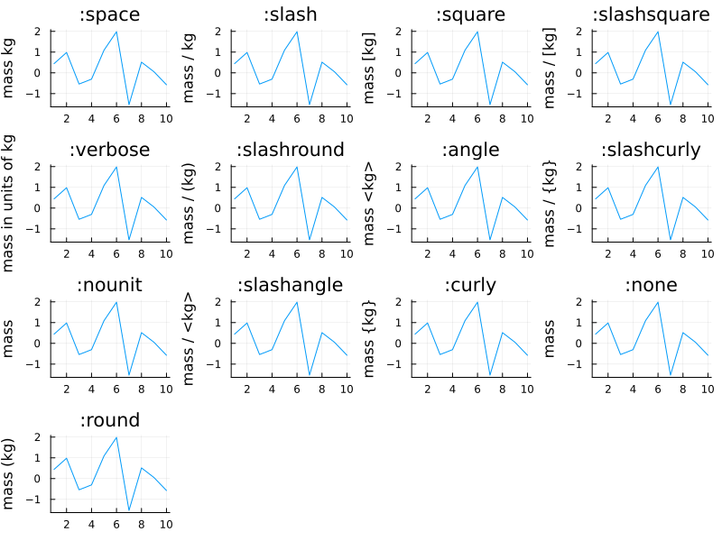
unitformat can also be a Char, a String, or a Tuple (of Chars or Strings), which will be inserted around the label and unit depending on the length of the tuple:
URtuples = [", in ", (", in (", ")"), ("[", "] = (", ")"), ':', ('$', '$'), (':', ':', ':')]
plot([plot(y, ylab = "mass", title = repr(s), unitformat = s) for s in URtuples]..., size = (600, 600))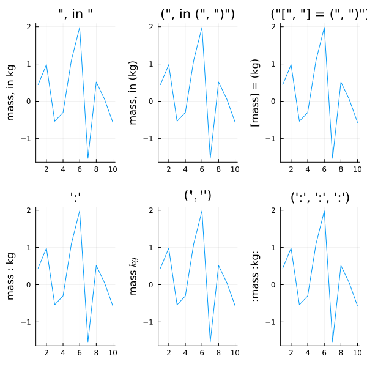
For extreme customizability, you can also supply a function that turns two arguments (label, unit) into a string:
formatter(l, u) = string("\$\\frac{\\textrm{", l, "}}{\\mathrm{", u, "}}\$")
plot(y, ylab = "mass", unitformat = formatter)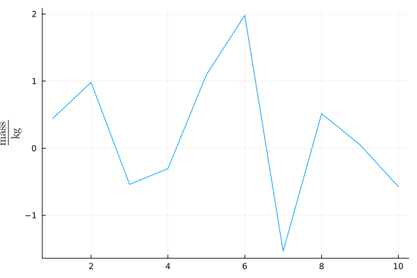
Axis unit
You can use the axis-specific keyword arguments to choose axis units. However, doing this after the first series is plotted will produce incorrect plots–units get stripped according to the current units for each axis. So, this works:
plot(y, yunit = u"g")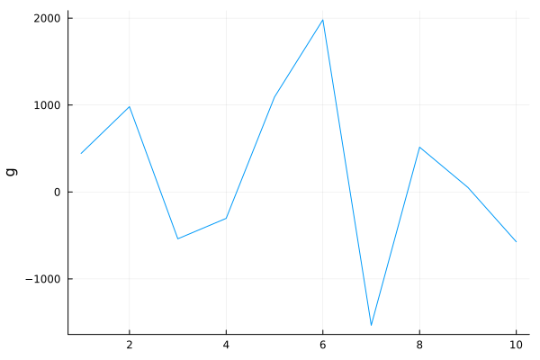
This will be wrong:
plot(y)
plot!(2y, yunit = u"g")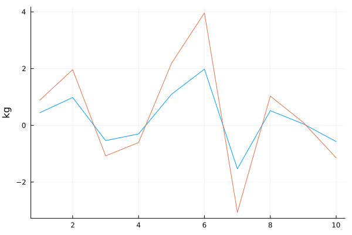
Axis limits and ticks
Setting the axis limits and ticks can be done with units
x = (1:length(y)) * u"μs"
plot(x, y, ylims = (-1000u"g", 2000u"g"), xticks = x[[1, end]])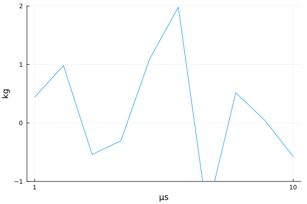
or without
plot(x, y, ylims = (-1, 2), xticks = 1:3:length(x))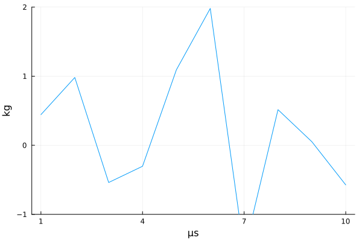
Multiple series
You can plot multiple series as 2D arrays
x, y = rand(10, 3) * u"m", rand(10, 3) * u"g"
plot(x, y)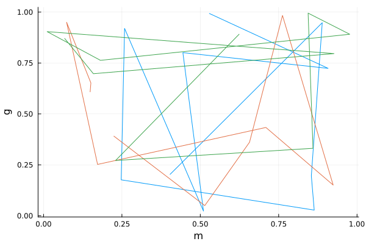
Or vectors of vectors (of potentially different lengths)
x, y = [rand(10), rand(15), rand(20)] * u"m", [rand(10), rand(15), rand(20)] * u"g"
plot(x, y)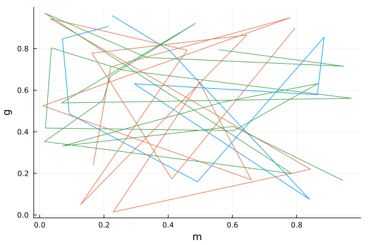
3D
It works in 3D
x, y = rand(10) * u"km", rand(10) * u"hr"
z = x ./ y
plot(x, y, z)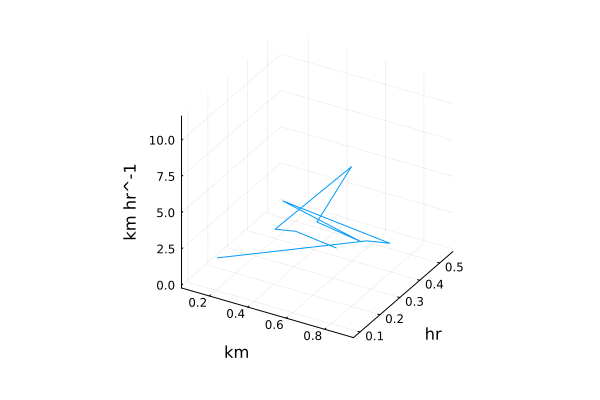
Heatmaps
For which colorbar limits (clims) can have units
heatmap((1:5)u"μs", 1:4, rand(5, 4)u"m", clims = (0u"m", 2u"m"))![]()
To specify colorbar units and unit formatting, use zunit, zunitformat, and cbar_title:
heatmap((1:5)u"μs", 1:4, rand(5, 4)u"m", zunit = u"cm", zunitformat = :square, cbar_title = "dist")![]()
Scatter plots
You can do scatter plots
scatter(x, y, zcolor = z, clims = (5, 20) .* unit(eltype(z)))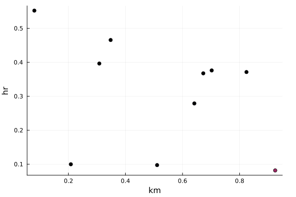
and 3D scatter plots too
scatter(x, y, z, zcolor = z)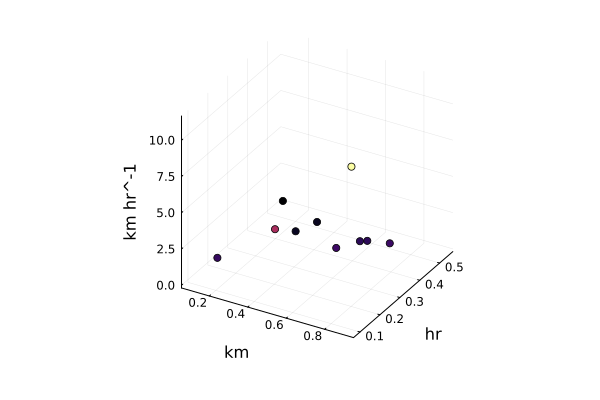
Contour plots
for contours plots
x, y = (1:0.01:2) * u"m", (1:0.02:2) * u"s"
z = x' ./ y
contour(x, y, z)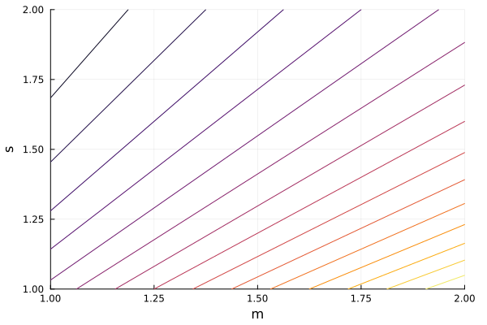
and filled contours, again with optional clims units
contourf(x, y, z, clims = (0u"m/s", 3u"m/s"))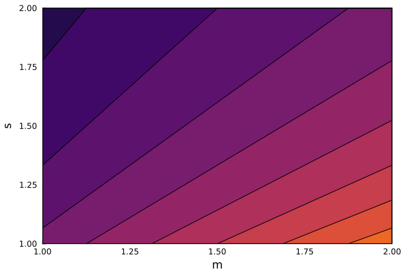
Error bars
For example, you can use the yerror keyword argument with units, which will be converted to the units of y and plot your errorbars:
using Unitful: GeV, MeV, c
x = (1.0:0.1:10) * GeV / c
y = @. (2 + sin(x / (GeV / c))) * 0.4GeV / c^2 # a sine to make it pretty
yerror = 10.9MeV / c^2 * exp.(randn(length(x))) # some noise for pretty again
plot(x, y; yerror, title = "My unitful data with yerror bars", lab = "")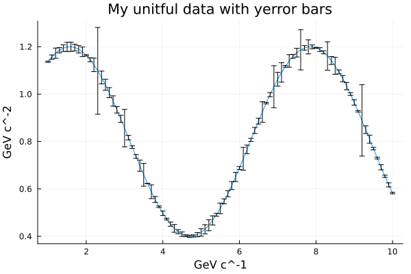
Ribbon
You can use units with the ribbon feature:
x = 1:10
plot(x, -x .^ 2 .* 1u"m", ribbon = 500u"cm")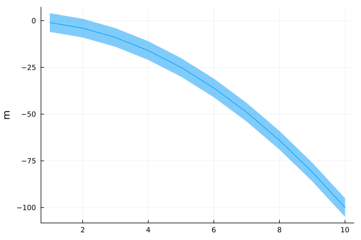
Functions
In order to plot a unitful function on a unitful axis, supply as a second argument a vector of unitful sample points, or the unit for the independent axis:
model(x) = 1u"V" * exp(-((x - 0.5u"s") / 0.7u"s")^2)
t = randn(10)u"s" # Sample points
U = model.(t) + randn(10)u"dV" .|> u"V" # Noisy acquicisions
plot(t, U; xlabel = "t", ylabel = "U", st = :scatter, label = "Samples")
plot!(model, t; st = :scatter, label = "Noise removed")
plot!(model, u"s"; label = "True function")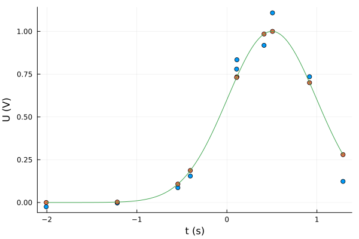
Initializing empty plot
A plot can be initialized with unitful axes but without datapoints by simply supplying the unit:
plot(u"m", u"s")
plot!([2u"ft"], [1u"minute"], st = :scatter)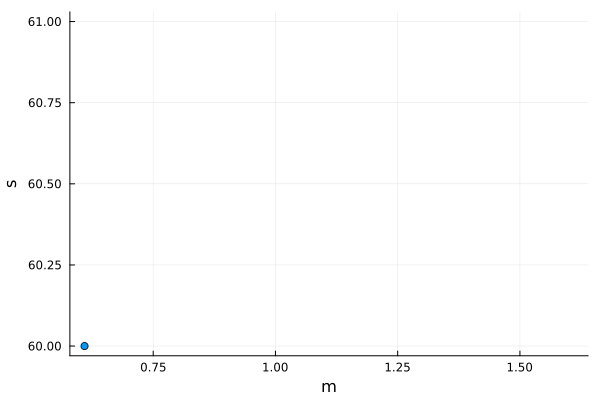
Aspect ratio
Unlike in a normal unitless plot, the aspect ratio of a unitful plot is in turn a unitful number $r$, such that $r\cdot \hat{y}$ would take as much space on the $x$ axis as $\hat{y}$ does on the $y$ axis.
By default, aspect_ratio is set to :auto, which lets you ignore this.
Another special value is :equal, which (possibly unintuitively) corresponds to $r=1$. Consider a rectangle drawn in a plot with $\mathrm{m}$ on the $x$ axis and $\mathrm{km}$ on the $y$ axis. If the rectangle is $100\;\mathrm{m} \times 0.1\;\mathrm{km}$, aspect_ratio=:equal will make it appear square.
plot(
plot(randn(10)u"m", randn(10)u"dm"; aspect_ratio = :equal, title = ":equal"),
plot(
randn(10)u"m", randn(10)u"s"; aspect_ratio = 2u"m/s",
title = "\$2\\;\\mathrm{m}/\\mathrm{s}\$"
),
plot(randn(10)u"m", randn(10); aspect_ratio = 5u"m", title = "\$5\\;\\mathrm{m}\$")
)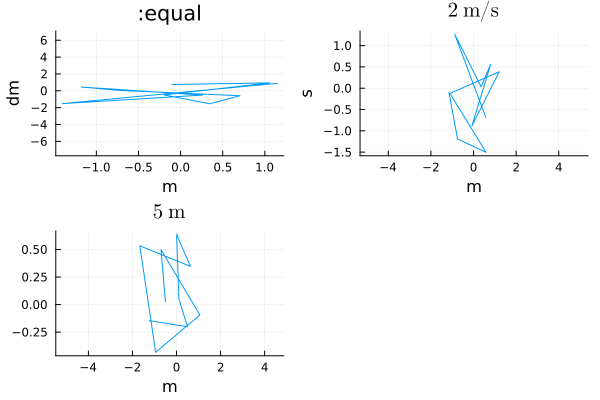
This page was generated using Literate.jl.